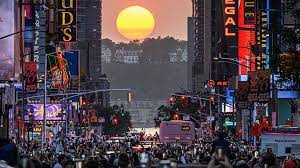

Amerika'da gezilecek yerler
New York
ABD’de en büyük ve en kalabalık şehir olan New York City, sürekli olarak 'uyuyamayan şehir' olarak adlandırılır, çünkü sürekli aktivite vardır şehirde. Amerika’nın en fazla turisti ağırlayan noktalarından biri olan New York, ülkenin mutlaka görülmesi gereken yerlerinden biri. Brooklyn, Manhattan, Queens, Staten Island ve Bronx’tan oluşan beş ilçeden oluşur. Başta Özgürlük Anıtı olmak üzere şehirde görülmesi gereken pek çok dünyaca ünlü yer bulunuyor. Şehrin kalbinin attığı Times Square, doğayla iç içe zaman geçirmek, spor yapmak, dinlenmek ve huzurlu zaman geçirmek için Central Park, lüks markaların mağazalarının sıralandığı Fifth Avenue gidilecek yerler arasında bulunuyor. Kuzey Amerika kıtasındaki en muhteşem doğal güzelliklerden Niagara Şelaleleri de New York eyaletinde yer alıyor.
Washington DC
Devletin yönetim merkezi olarak kullanılmaktadır. Bu da şehre birçok bürokrat ve iş adamının sıklıkla ziyaret etmesi anlamına geliyor. Yoğun insan trafiği nedeniyle şehir her zaman ülkenin en hareketli yerlerinden biri konumunda bulunuyor. Pek çok farklı kültürün ev sahipliği yaptığı kozmopolit bir şehir olan Washington, Beyaz Saray, Capitol Binası, Washington Anıtı ve Lincoln Anıtı gibi pek çok simgesel yapı ile tanınmaktadır. Bu anıtların çoğunun tamamı National Mall olarak bilinen güzel peyzajlı park alanında yer almaktadır.
Los Angeles

ABD’nin ikinci büyük şehri olan Los Angeles, muhteşem plajları ve Hollywood‘un kalbi konumunda olması ile tam bir cazibe merkezidir. Hareketli filmler, televizyon yapımları ve müzik kayıtları için önde gelen bir dünya merkezidir. Burada Hollywood’a dair aradığınız her şeyi ve çok daha fazlasını bulma şansına sahip olabiliyorsunuz. Beverly Hills ise Hollywood’un lüks ve ihtişamlı yaşantısına tanık olmak isteyenleri kendisine çekiyor. Dünya yıldızlarının tercihi olan Malibu‘da okyanusun tadını çıkarabilirsiniz. Santa Monica rıhtımındaki dönme dolap ve lunapark ise çocuklu turistler için uygundur. Birçok etnik mahallelerden oluşan devasa, kozmopolit bir şehir olan Los Angeles, bol güneşli ve yıl boyunca yumuşak iklimi için tercih edilen bir yerdir.